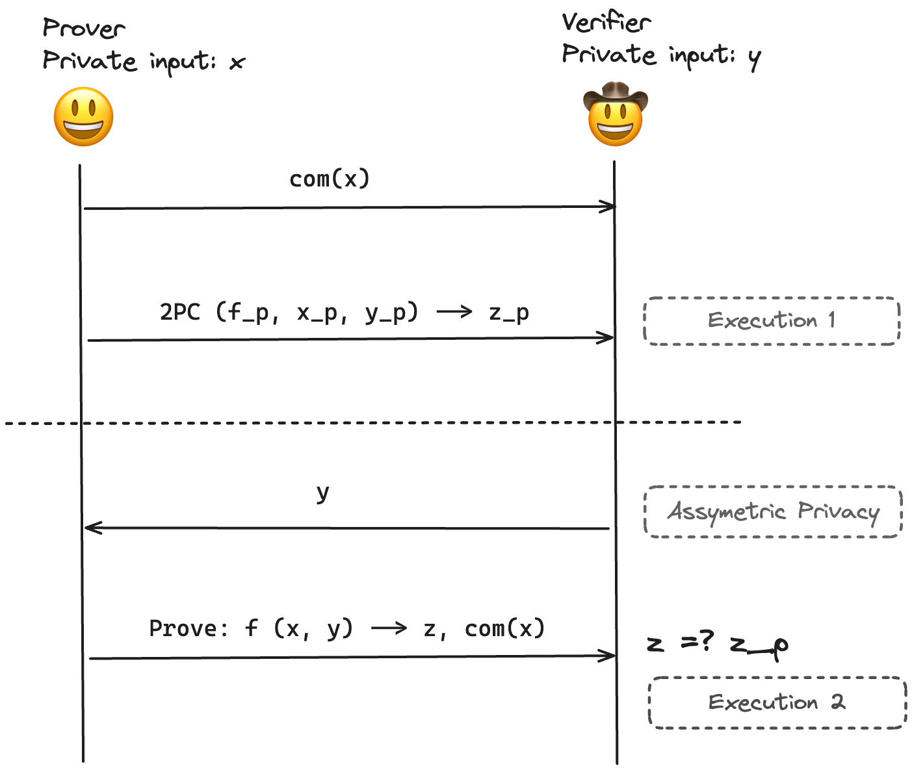

This document is an attempt to explain TLSNotary and its cryptographic underpinnings, DEAP. It also sheds light on the practical bottlenecks when using this system in production and outlines the future steps on the TLSNotary roadmap. A cooler and perhaps more appropriate title for the document could be "Diving Deep into DEAP," but "Diving Deep into TLSN" was chosen as it might resonate more broadly with the audience :)
TLS secures all connections on the internet today. In TLS, we have two parties: the client and the server. The first step in the TLS protocol is the TLS handshake, in which the client verifies the identity of the server by verifying their domain certificates and also generates a pair of symmetric keys that are used to encrypt further communication between the server and the client.
The use of symmetric keys for encryption prevents the client from forwarding the encrypted server response to a third-party verifier and convincing them about the authenticity of the response because the client also has the symmetric keys and thus can forge any arbitrary response allegedly coming from the server.
TLSNotary presents a solution to the above problem by splitting the session key between the Prover and the Verifier (Notary). With only a partial session key, the Prover is unable to forge server responses. In TLSN, the Verifier and the Prover run the 2PC-TLS protocol between them and together emulate the client in the TLS protocol. At the end of the 2PC-TLS protocol, the Verifier is convinced about the authenticity of the server response.
sk_p and sk_v respectively.C1 to the server.
p, sk_psk_vAES-GCM(p, sk_p ⊕ sk_v)C1 to the server.C2.C1, C2 to the Verifier.sk_v to the Prover.sk_csk_csk_c is formed from sk_p and sk_vp and response r which the Verifier (Notary) attests to and makes the proof portable. Any third-party the trusts the Verifier (Notary) can verify the proof.The two-party computation in 2PC-TLS is performed using Garbled Circuits. zkPass has a great blog on Garbled circuits. Garbled circuits are secure against malicious evaluator but not secure against malicious garbler. If the function to be computed is f on Garbler's input x and Evaluator's input y, a malicious garbler can:
f_gx_gy_gVanilla garbled circuits also suffer from the private input leakage attack vector. Essentially, the garbler could garble a different circuit f_g such that it leaks the evaluator's input y to them. Authenticated garbling schemes prevent these attack vectors but are costly in both compute and I/O.
One solution for such attack vectors using the semi-honest garbled circuits is "Dual Execution". In these protocols, an honest original evaluator can garble the function f and let the original garbler, evaluate the circuit. To simplify, if Alice is Garbler and Bob is evaluator for the first execution, then Bob becomes the Garbler and Alice the Evaluator for the second execution. If the output of the first and the second execution match, then both the parties are satisfied about the correctness of the original evaluation and the output.
TLSN uses the Dual Execution With Assymetric Privacy (DEAP) scheme. In this scheme one of the parties has complete privacy while the other party reveals their private inputs during the protocol, hence the "assymetric" privacy. This construction works for TLSN because after the TLS session is closed, the security of the protocol is not compromised if the Notary shares their keys with the Prover.
Above is a very simple diagram that explains DEAP. The function is executed twice thus "Dual exeuction". The verifier reveals their private inputs to the Prover after the initial phase, thus "Assymetric Privacy". The second exeuction proves:
f executed in 2PC stepy in 2PC stepx that satisfies f(x, y) -> z. Note that this needs to be a ZK proof to preserve the privacy of xThe final check z =? z_p translates to f(x, y) =? f_p (x_p, y_p). f, y are public and known to the verifier. For a complex function f, a malicious Prover can satisfy the equation only if they are able to predict y, which is a random value generated by the Verifier.
x and y are Prover and Verifier's inputs, respectively.[x]_P and [y]_P are Prover and Verifier's encoded active inputs, respectivelyEv(G,[x],[y])=[z]d denotes output decoding information where De(d,[v])=vΔ denotes the global offset of a garbled circuit (I don't completely understand the revlevance of it)com denotes a commitmentTo reason about the above diagram, try replacing the 2PC step in simple DEAP with the detailed Garbled circuits step and the prove phase (second execution) with another Garbled circuits computation.
Important things to notice in DEAP
G_PG_Vf(x, y) immediately at the end of the evaluation phase. Thus they can choose to delay the equality check phaseG_V and commits to the output [z]_V blinded using a random r, upon which the Verifier opens their garbling and reveals their key share. This allows the Prover to check that the garbling and OT were done correctly and that a potentially malicious verifier is not trying to extract the Prover's secret x. Once the Prover is convinced about the correctness of Verifier's garbling, it opens the commitment.Note that DEAP uses garbled circuits to generate the ZK proof. Read their docs to understand the reasoning.
DEAP is one of the core building blocks of the 2PC-TLS protocol. Next we can dive deeper into the individual phases of the TLS protocol and see how DEAP is used in each phase.
Similar to the vanilla TLS version, 2PC-TLS can also be divided into three sub-parts: handshake, encryption and decryption.
This is still largely a black box for me. I have a very high level understanding of how 2PC-TLS handshake works. Hence skipped for now.
The 2PC-TLS encryption has two substeps:
f is AES-CTR encryption function.p (Plaintext), Kp (Prover's private key)Kv (Verifier's private key)The 2PC-TLS Decryption has three substeps
f is Enc(Kp ⊕ Kv, ctr) ⊕ zKp (Prover's private key), z (encryption mask)Kv (Verifier's private key)ectr_z to get the plaintext, i.e. c ⊕ ectr_z ⊕ z = p, where ectr_z is output of 2PC computation and c is ciphertext returned from the serverIn the 2PC-TLS decryption step, once the Verifier has verified the MAC of the ciphertext response, the Verifier is convinced about the authenticity of the response. And if the Prover doesn't want to decrypt the response in 2PC, then the Verifier could just reveal their share of the key to the Prover using which the Prover can decrypt the ciphertext response. Thus effectively skipping step 2 in 2PC-TLS decryption above. This is fine, because we only care about the "authenticity" of the response which is guaranteed by the MAC check. Also, this helps save a lot of bandwidth. I'm yet to find a case where we might not need deferred decryption.
The current implementation of TLSNotary defers the final equality check in DEAP for all the DEAP executions towards the end after the TLS session is closed. This is executed as the final step in MPC-TLS where all the equlity checks are done. Today, this "zk proof" is generated using Garbled circuits. As stated before, this equality check proves to the Verifier that all the garblings by the Prover were correct and there share of the secret key was not revealed prematurely.
Garbled circuits are bandwidth intensive. Since TLSN uses GC exetensively, TLSN is also a bandwidth-intensive protocol.
In MPC-TLS we perform AES-GCM using Garbled circuits in the following steps:
1 AES Block (16 bytes) is 6500 AND gates.
In semi-honest 2PC that is DEAP, Half-gate GC costs 32 bytes/AND gate, so:
=> 6500 * 32 => ~208kB/block(208kB/block) / (16 bytes/block) = ~13kB/byteHence every byte in the plaintext contributes to 13kB of upload/download when encrypted/decrypted using GC. So, for a plaintext request oflp bytes and plaintext response of lr bytes
When Deferred decryption is NOT enabled:
[G]_p during encryption setup phase + [G]_p during decryption setup phaselp * 13 + lr * 13 kB(lp + lr) * 13 kB[G]_v during encryption equality check phase + [G]_v during decryption equality check phase + [G]_v during proving plaintext responselp * 13 + lr * 13 + lr * 13 kB(lp + 2 * lr) * 13 kBWhen Deferred decryption is enabled:
[G]_p during encryption setup phaselp * 13 kB[G]_v during encryption equality check phase + [G]_v during proving plaintext responselp * 13 +lr * 13 kB(lp + lr) * 13 kBNote: We have not included the download/upload contributed due to 2PC-TLS handshake in the above calculations. I'm yet to understand 2PC-TLS in detail.
All these downloads and uploads can be preprocessed in the offline phase, i.e., done before the TLS connection is opened with the server. Once the TLS connection is opened with the server, the Prover and the Notary have around 10-30s before server timeout.
This is a term that you will often see being thrown around for on-chain verification. It stands for "authenticated decoding". In the final step of 2PC-TLS decryption, the notary is convinced about the correctness of [p]_N. The Notary attest to [p]_N, but that means a third-party verifier verifying the attestation has to recompute the encodings and hash them. Because each byte is blown up to 8/128 bytes (not exactly sure), the hashing becomes too big to fit in a single block (or is too costly). The Authdecode protocol executed after the 2PC-TLS decryption, convinces the Verifier (Notary) about the correctness of the raw plaintext, which they can attest to. The plaintext length would be significantly smaller and can be hashed on-chain.
Quicksilver will replace the use of Garbled circuits for ZK. It's a fast and cheap IZK protocol and would be run between the Prover and the Notary. This would mean we wouldn't have to use GC to prove the correct first execution and thus we would get rid of all downloads in the protocol. This is significant because even though download is comparitively "easier" than upload for Provers (users), download size is still signifcantly larger (lp + 2*lr)*13 (or (lp + lr) * 13) compared to upload (lp + lr)*13, as generally lr > lp, i.e. response is much bigger than the request.
After quicksilver with deferred decryption enabled:
[G]_p during encryption setup phaselp * 13 kB[G]_v during encryption equality check phase + [G]_v during proving plaintext response~= 0 (Minimal amount of download because doen using Quicksilver)This explanation of DEAP and TLSNotary is pretty broad and might not nail all the details. It's meant to give you a starting point to understand TLSNotary and DEAP. To get a complete understanding, please refer to their docs and the respective papers.